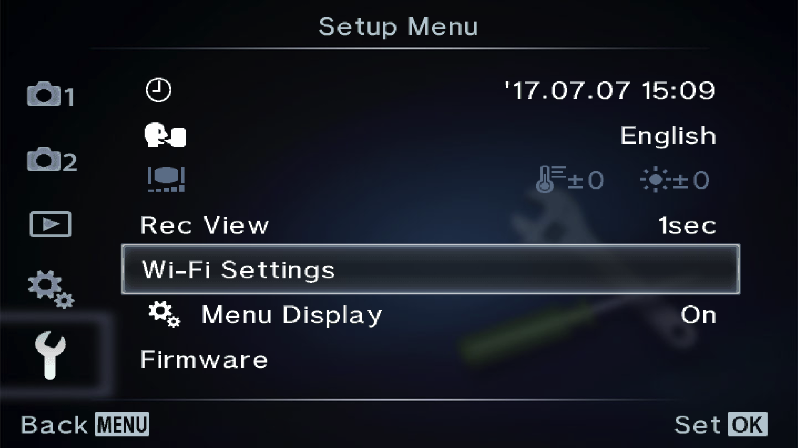
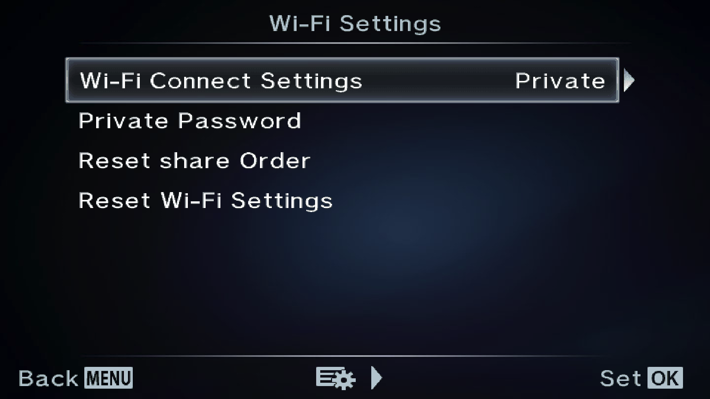

Before We Start
- Make sure your camera is supported by Cascable.
- Check that your camera's firmware is up-to-date.
- Check that Cascable is up-to-date.
Connecting Cascable to Your WiFi-Enabled Camera
- Press the Menu button on your camera and navigate to Wi-Fi Settings in the
 Setup Menu.
Setup Menu.
On some camera models, you may not have this setting. Instead you will find the Wi-Fi settings in Camera Menu 1 > Wi-Fi Start. If this is the case for your camera, select Wi-Fi Start then follow from step 5 below.

- Make sure the Wi-Fi Connect Settings is set to Private.

- Press Menu to get back to the Live View screen.
- Tap Wi-Fi on the touch screen — Wi-Fi Starting should appear for a few seconds before displaying connection details.
- On your iOS device, open Settings and navigate to Wi-Fi, then select the WiFi network and enter the password that's displayed on your camera's screen.
- Launch Cascable on your iOS device. It should automatically detect and connect to your camera.
Still Stuck?
If you're still stuck, head over to the Cascable Website and we'll help you out.